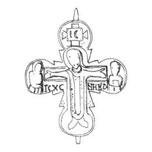

Catalog › CE-0226 · KOR2003-I.1.7
Valvă de față de encolpion cu capete ascuțite și medalioane, Răstignire cu Hristos în colobium
sec. XII–XIII (1101–1300) · Nabutiv, regiunea Cerkasî (fostul ținut Kaniv, gubernia Kiev), Ucraina · Muzeul Național de Istorie al Ucrainei, Kiev, inv. В-1009
single valve of a reliquary cross, aramă; c. XII–XIII (1101–1300); found at Nabutiv, regiunea Cerkasî (fostul ținut Kaniv, gubernia Kiev), Ucraina; kept at Muzeul Național de Istorie al Ucrainei, Kiev.


Identificare
- Categorie
- Valvă izolată
- Material
- Aramă
- Tehnică
- Turnare în relief; Gravare (incizie)
- Dimensiuni
- Î 60 × L 53 mm
Iconografie
- Avers
- Răstignirea (Hristos în colobium)
- Descriere avers
- Valvă de față cu capete ușor lărgite și ascuțite, la care se alipesc medalioane rotunde cu imagini în relief jos și moale. În centru Răstignirea cu traversa lemnului crucii evidențiată și tăbliță în medalionul de sus, cu jumătăți de figuri ale adstanților în medalioanele laterale. Hristos este în colobium. Chipurile și detaliile ornamentale ale veșmintelor sunt șterse. În proeminențele ascuțite ale capătului de jos crucile sunt marcate prin patru puncte adâncite. Inscripțiile sunt făcute cu linii adânci, clare: IC în tăbliță, IC XC NHKA sub mâinile lui Hristos.
- Inscripții
- IC; IC XC NHKA
- Limba
- Greacă
Datare și atribuire
- Datare
- sec. XII–XIII (1101–1300)
- Centru
- Necunoscut
- Tipologie
- Korzukhina–Peskova 2003, tip I 1
Descoperire
- Localitate
- Nabutiv
- Regiune
- regiunea Cerkasî (fostul ținut Kaniv, gubernia Kiev)
- Țară
- Ucraina
- Context
- Necunoscut
Păstrare și referințe
- Colecție
- Muzeul Național de Istorie al Ucrainei, Kiev
- Nr. inventar
- В-1009
- Bibliografie
- G. F. Korzukhina, A. A. Peskova, Древнерусские энколпионы. Нагрудные кресты-реликварии XI–XIII вв., Sankt-Petersburg, 2003 [Korzukhina–Peskova 2003], p. 45, cat. nr. I 1/7, reprodusă la Табл. 6 (planșe, p. 248). Bibliografie citată în sursă: Корзухина, архив ф. 77, д. 14, л. 8, 46.
- Figura
- Табл. 6
- Planșe
- Korzukhina–Peskova 2003, Табл. 6 (planșă fără paginație proprie în PDF; p. 248 tipărită)
- Observații
- Datare după Peskova: sec. XII–XIII. Encolpioanele de acest tip sunt puțin numeroase; în afara celor de la Nabutiv și Cernovka (I 1/13), au fost găsite la Chersones (1903, GE № X-165) și în fortăreața bizantină de pe insula dunăreană Pekiul lui Soare (Diaconu, Baraschi 1977, fig. 102, 6); un exemplar cumpărat în Istanbul se păstrează în GE (№ W-175, din colecția Sîrku-Boltenkova). Planșa reproduce desenul crucii de la Chersones întocmit de G. A. Kuznețova după desenul lui G. F. Korzuhina (corectat și completat de A. A. Peskova), plus fotografia valvei de față a exemplarului din NF IIMK RAN. Coordonate: nu sunt date în sursă.
Citare: Corpus Encolpiorum, CE-0226, Valvă de față de encolpion cu capete ascuțite și medalioane, Răstignire cu Hristos în colobium, --root/piese/KOR2003-I.1.7/ (accesat 2026-10-20).